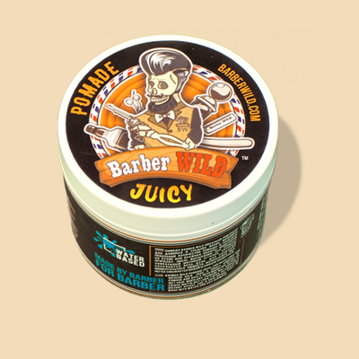
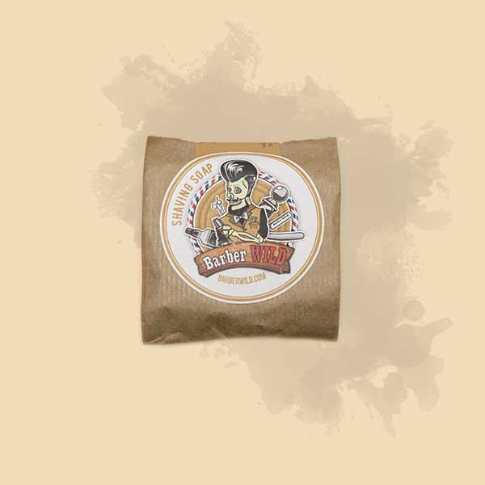

Помада Barber Wild создана на водной основе, поэтому не только несет пользу здоровью кожи и волос, но и значительно легче смывается водой. Пчелиный воск обладает влагоотталкивающей структурой, а исцеляющая энергия ценного масла арганы благотворно влияет на волосы и кожу головы, насыщая их питательными ингредиентами. Уникальная текстура помады Barber Wild после высыхания придает волосам роскошный матовый оттенок, сохраняющийся в течение всего дня.
Масло для бороды «Barber WILD»
Масло для бороды Barber Wild полностью состоит из высококачественных природных компонентов. Его основу составляют масла касторовых семян, миндаля и косточек винограда. Эти ингредиенты делают волосы послушными, они не колются, не путаются, и укладка становится легкой и приятной. Увлажненная кожа под бородой приобретает особенную мягкость и здоровый внешний вид.

Помада для волос «Barber WILD»
Помада Barber Wild создана на водной основе, поэтому не только несет пользу здоровью кожи и волос, но и значительно легче смывается водой. Пчелиный воск обладает влагоотталкивающей структурой, а исцеляющая энергия ценного масла арганы благотворно влияет на волосы и кожу головы, насыщая их питательными ингредиентами. Уникальная текстура помады Barber Wild после высыхания придает волосам роскошный матовый оттенок, сохраняющийся в течение всего дня.

Мыло «Barber WILD»
Мыло для бритья Barber Wild сделано по крафтовому рецепту вручную. Его основу составляют натуральные масла, которые содержат впечатляющее изобилие витаминов А и Е, обеспечивают защиту кожи, насыщают ее влагой, и оказывают великолепный эффект регенерации. Особый ингредиент – белая глина эффективно, но мягко очищает поры, сужая их, а приятный успокаивающий аромат мыла и хорошее настроение способны сделать любой день лучшим.